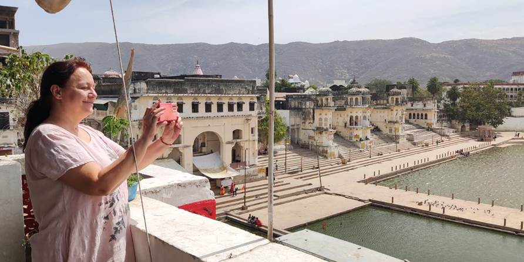
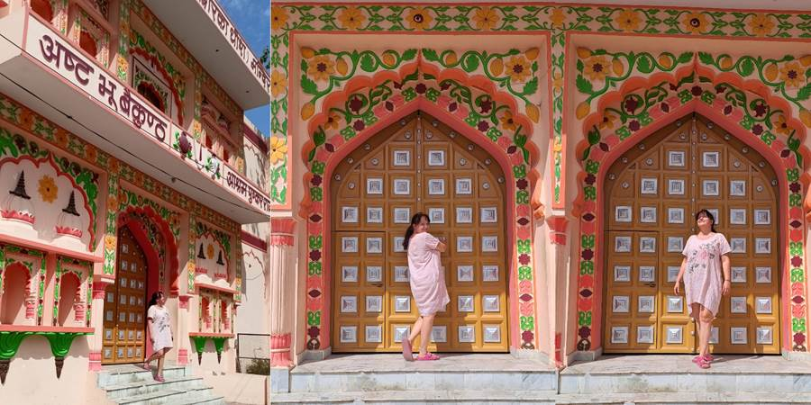
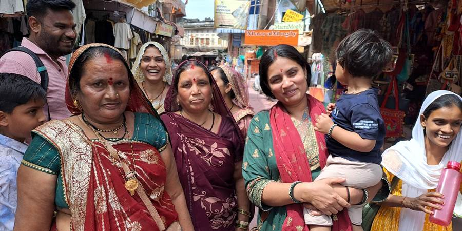
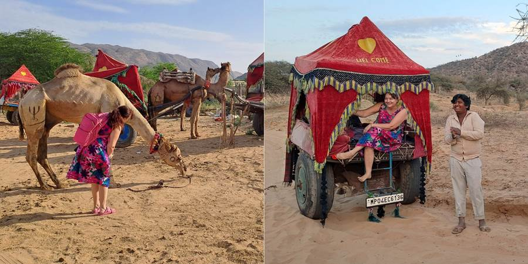
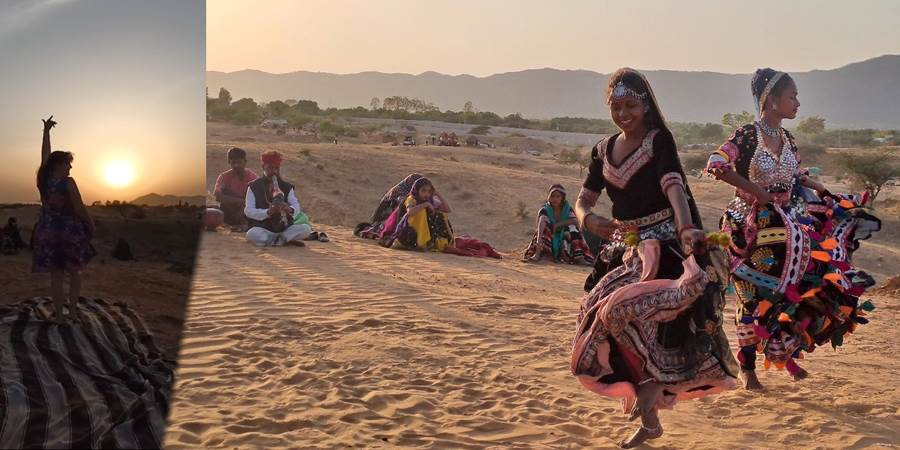

Peti dan, poslednji u Puškaru: Pustinja, kamile i cigani
Kuliramo, šetamo se, obilazimo prodavnice (neko više, neko manje). Idemo po rooftop restoranima sa lepim pogledom na jezero. Jede se Hello to the queen, desert (banane, nešto hrskavo, sladoled, preliveno čokoladom, grožđe, nar, indijski oraščići, fantazija), pije se ceđeni ananas (Ok, jednom nisam bila verna mango lasiju. Ups, još jednom. Sok od šećerne trske.) Otpada se i uživa.
Malo smo prošetale i na drugu stranu do neke lepe bele crkve sika, i do neke crkve koja podseća na šarenu tortu, kao da je kuća iz Ivice i Marice.
Nataša zamolila jednu ženicu da se slikaju, kad stvori se odjednom oko pola sela da se slikaju sa nama. Pored mene stala prelepa mlada žena sa malim detetom, gleda u mene, divi se i kaže: “Kako si ti lepa!” (možda mi je i persirala, sa engleskim se nikad ne zna). Molim? Tako si lepa. Ja? Pogledaj sebe koliko si lepa. Ona stidljivo odmahuje glavom. Nemoguće da nije svesna svoje mladosti i lepote. Opet, bela koža.
Jednom nas je vozio jedan ludi vozač tuk tuka i kad smo letele po onom tuk tuku dok je on zagrtao po uskim ulicama smo se smejale. Što smo se više smejale on je više jurio i smejao se.
Predveče smo išli u pustinju Tar gde navodno žive cigani. Neko je do tamo jahao kamile a neko se vozio u baldahinu koji kamila vuče. Nisam jahala kamilu ne zato što se bojim, nego što izbegavam jahanje i kamila, i slonova zbog zlostavljanja životinja. S druge strane sam htela ići u svoju prvu pustinju pa sam se nadala da joj je možda lakše da vuče baldahin na točkovima, mada nisam baš sigurna. Beton im je pun rupa i ostavile smo bubrege odskačući u baldahinu a po pustinji po utabanom putu je već bilo prijatnije.
U pustinji su nas dočekali cigani muzikom i plesom. Animirali su i nas da plešemo. Bilo je interesantno. Išli smo kad je bio zalazak sunca pa je i to ulepšalo događaj. Grupica je bila vesela i saradljiva tako da smo se izigrali.
Ono što je interesantno je da ja ova tri dana nisam ni primetila da nisam jela meso. Toliko mi je sve bilo lepo i ukusno. Tek kasnije u Jaipuru neko pita kako ste preživeli vegetarijanstvo u Puškaru a ja u čudu. Da, Puškar je vegetarijanski grad jer je posvećen jednom od bogova koji je vegetarijanac, a pošto je to sveto mesto, svi stanovnici grada to poštuju. I u restoranima nema mesa. Prodavnicu kao klasičan market sa hranom nisam ni jednu videla za svo vreme boravka tamo. Ni gde se prodaje meso. Tezge sa povrćem i voćem sam videla. Dakle i ako hoćete, ne možete jesti meso iako je turistički grad, drže se svoga. Interesantno.